Culture
The culture of Tierralta, Córdoba, is a rich blend of ancestral traditions, artistic expressions, and customs that reflect the identity of its people. This municipality stands out for preserving the legacy of indigenous communities, especially the Embera Katio people, as well as for keeping alive the unique traditions of the Caribbean region.
Through its music, dances, festivals, crafts, and historical heritage, Tierralta offers an authentic cultural experience that allows visitors to discover and appreciate its roots, its history, and its connection to nature.
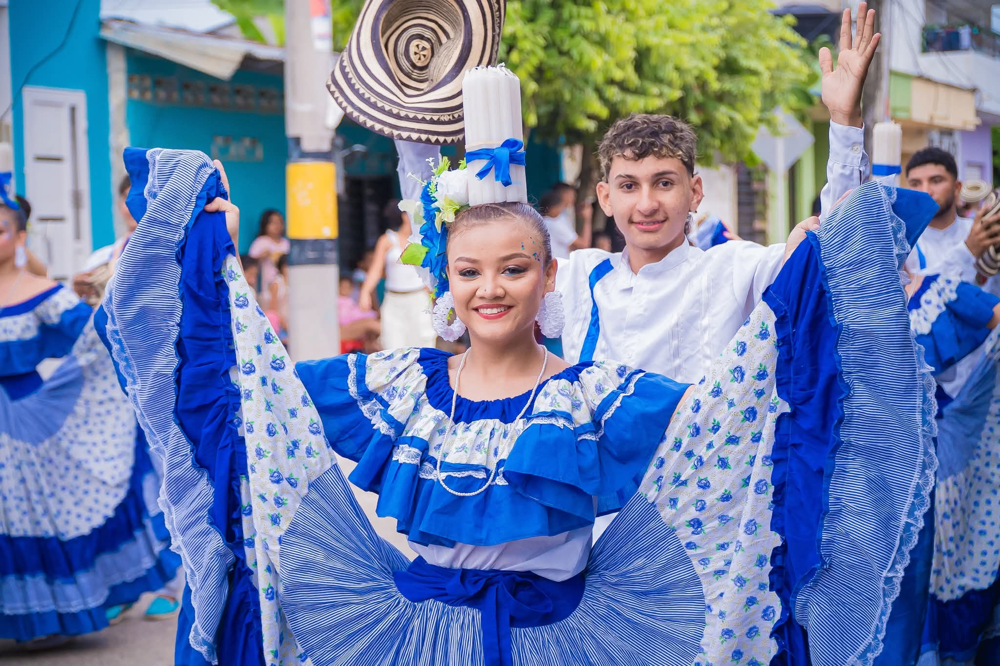
Traditions
Discover the ancestral rhythms of the Embera Katio people and the vibrant beast of cumbia, fandango, and vallenato that define Tierralta’s soul.
Explore →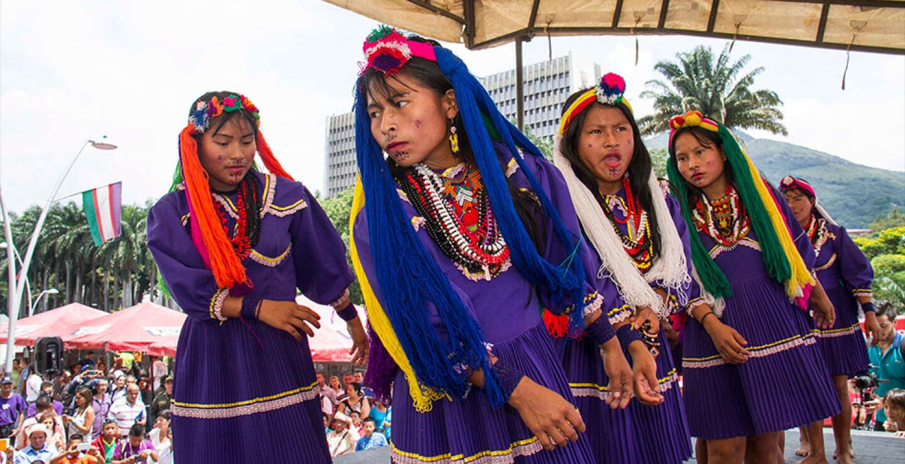
Heritage
From Zenú archeological remains to handcrafted indigenous artisanry, explore the cultural and historical treasures that shape this region’s identity.
Explore →
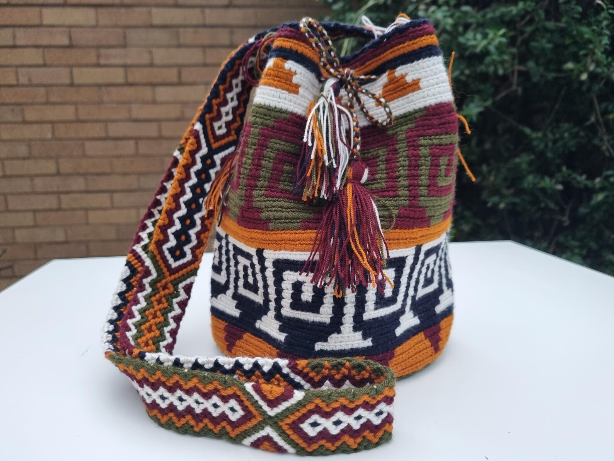
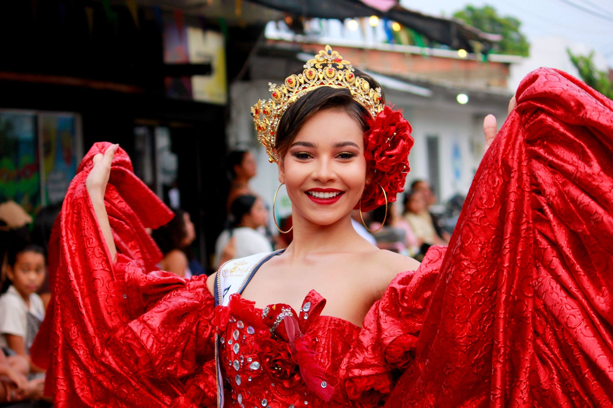
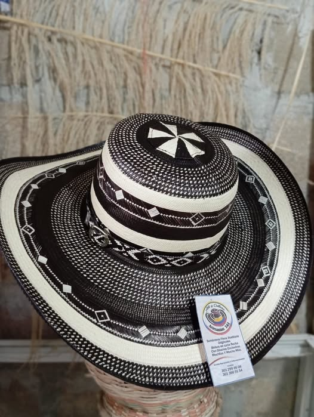
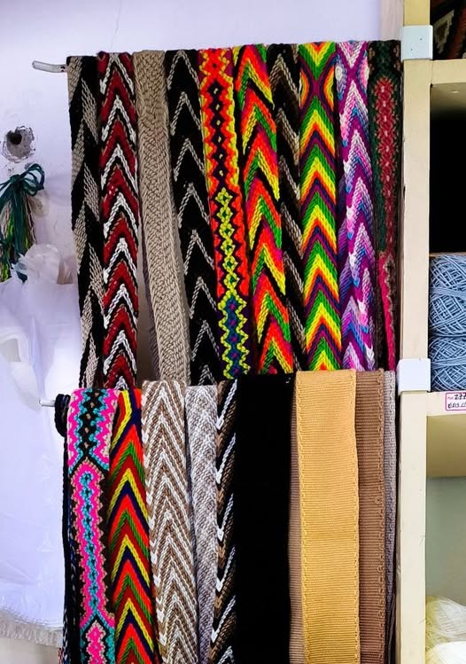
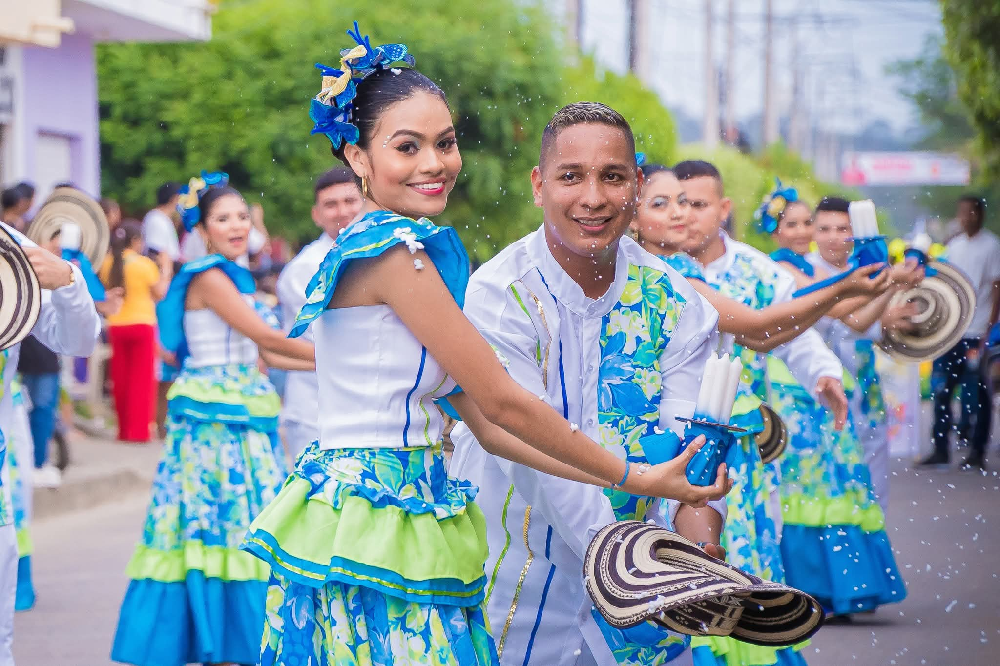
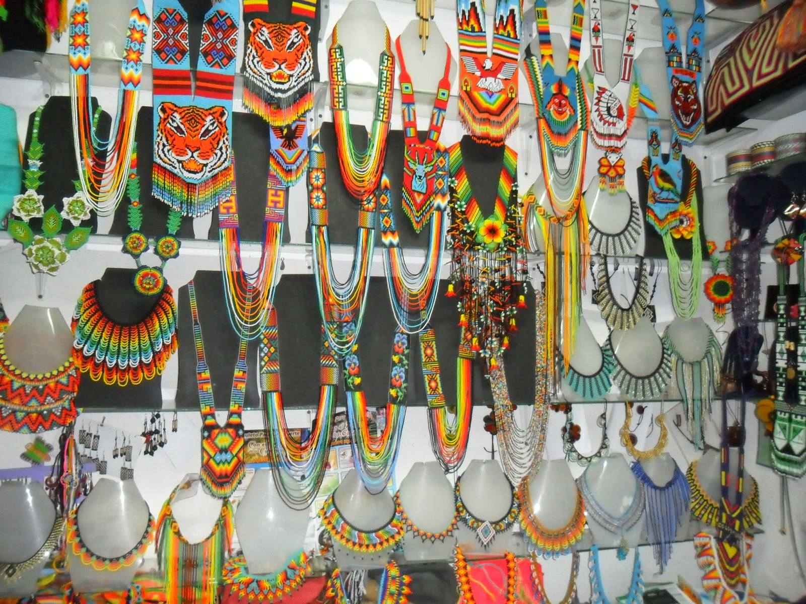
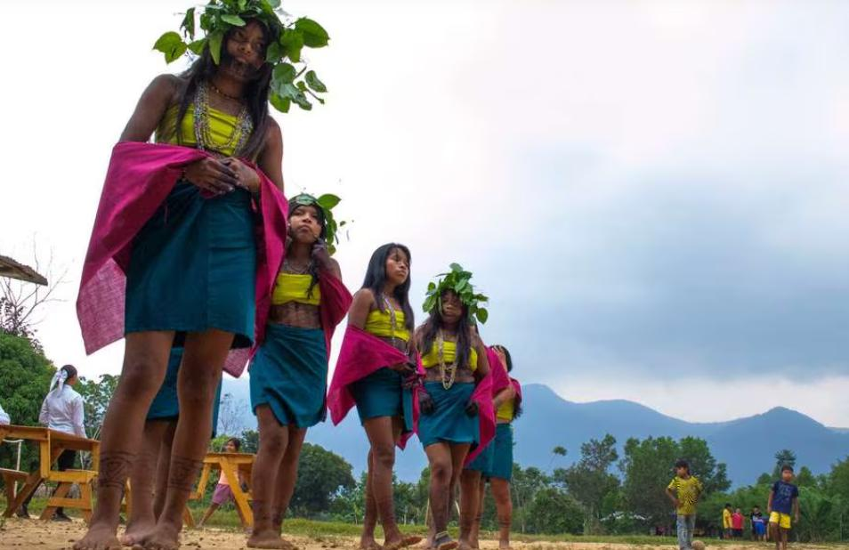
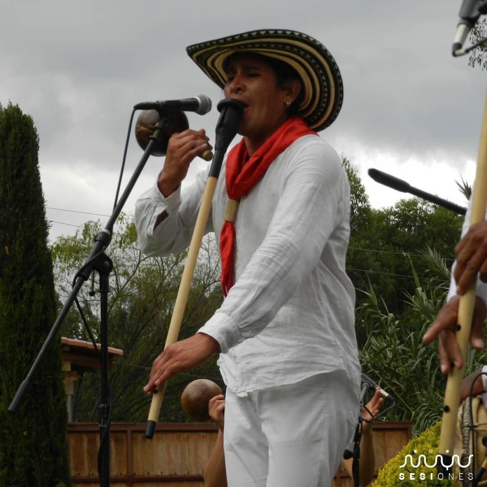
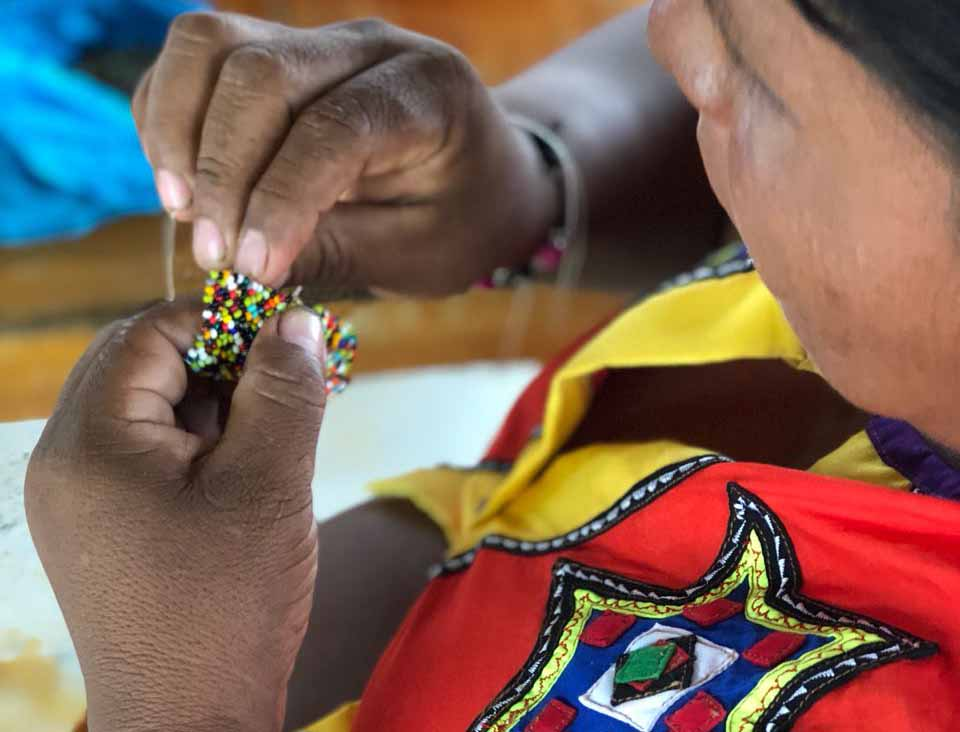
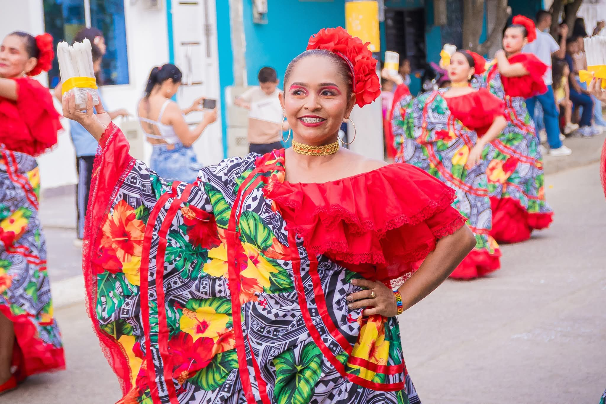
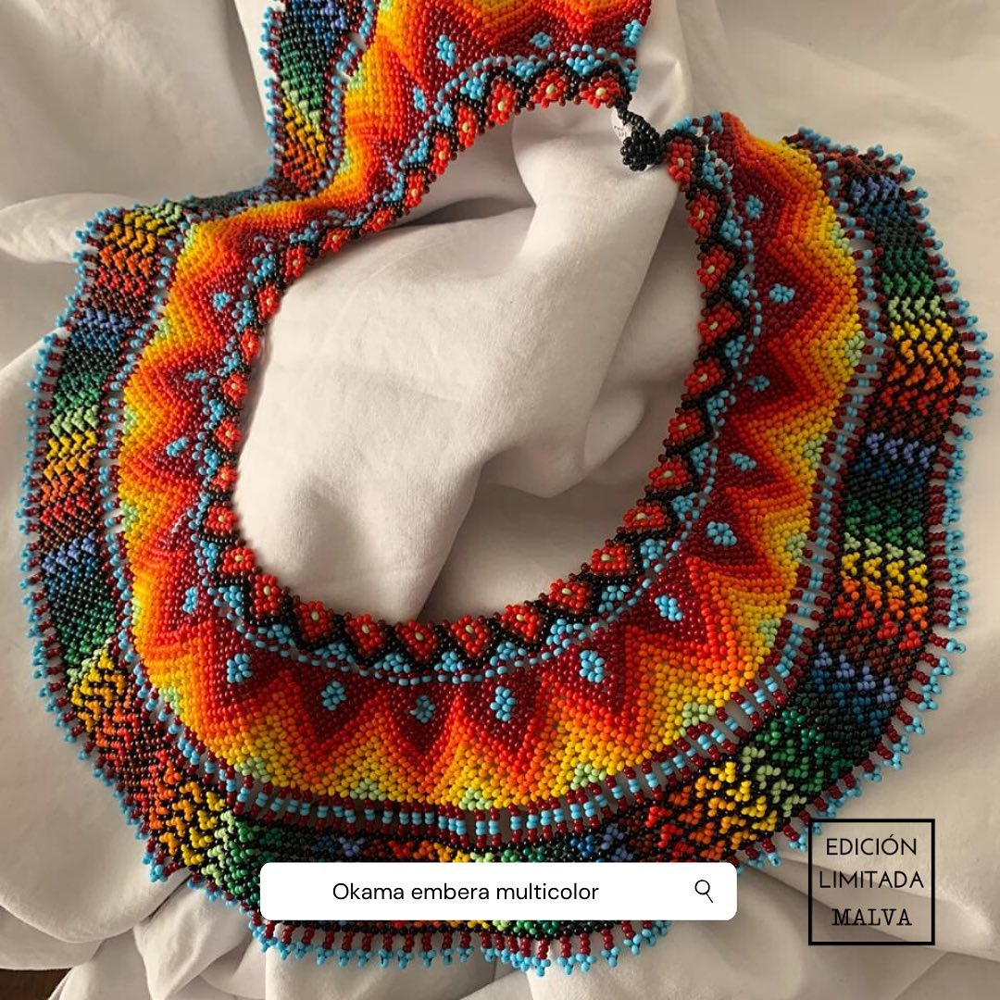